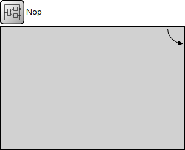
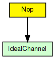

Just lets messages through without any change or delay.
The following diagram shows usage relationships between types. Unresolved types are missing from the diagram.
The following diagram shows inheritance relationships for this type. Unresolved types are missing from the diagram.
| Name | Direction | Size | Description |
|---|---|---|---|
| in | input | ||
| out | output |
// // Just lets messages through without any change or delay. // module Nop { gates: input in; output out; connections: in --> out; }